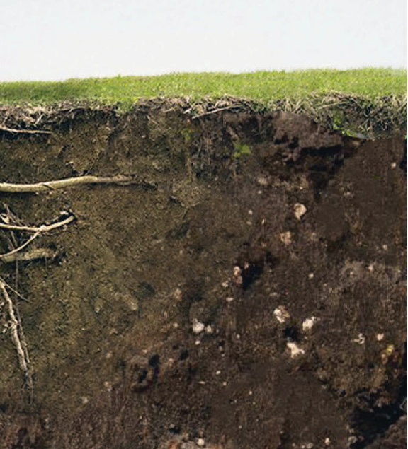
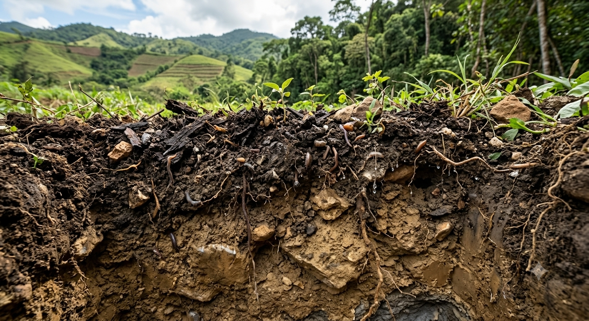
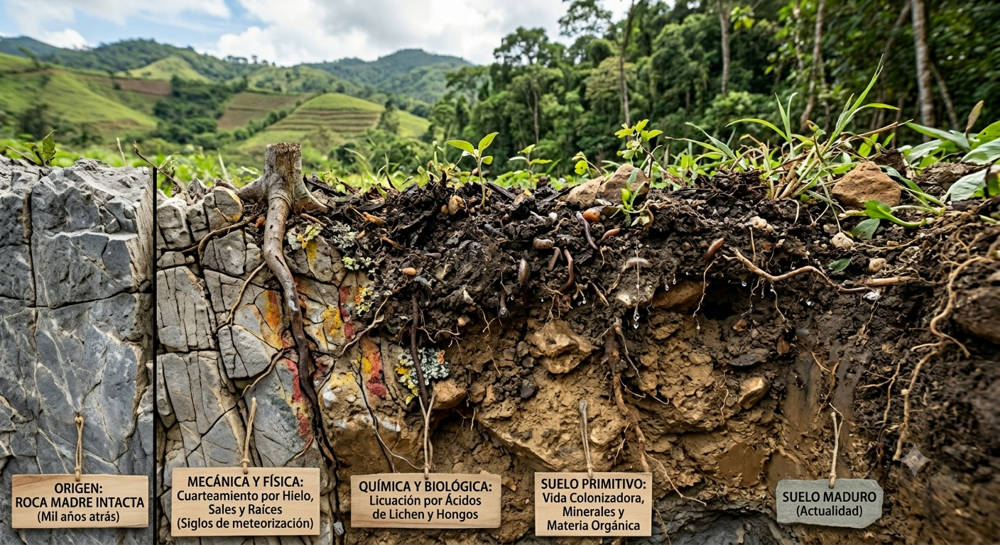

Los suelos son importantes para las labores agrícolas, dependiendo de los minerales que se encuentren en ellos. Los diferentes productos agrícolas que se siembren en estos tendrán dis tintos rendimientos y productividad. Por su im portancia para la agricultura, antes de empezar a cultivar, se realizan estudios para determinar cuáles son los minerales presentes en el suelo y la importancia de agregar aquellos minerales para mejorar la capacidad productiva de estos.

El suelo es la capa más superficial de la Tierra y está compuesta por
minerales, materia orgánica, agua, aire y organismos vivos. La definición
de suelo va a cambiar según el campo de estudio, concentrándose en di
ferentes aspectos como son sus características físico-químicas, evolución
o potencial productivo.

Los suelos son la parte más superficial de la corteza terrestre y se componen de residuos de rocas que provienen de los procesos de erosión, así como de alteraciones físicas y químicas, junto a la materia orgánica proveniente de la actividad bioló gica.
La producción de suelo se da por un proceso de meteorización y destrucción de la roca lo cual puede tomar hasta siglos. En función del suelo, se definen de la siguiente manera:
Minerales o componentes inorgánicos. Los minerales componen
cerca del 40 % o 50 % del volumen total de los suelos. Estos se ori
ginan en el proceso de descomposición de las rocas madre (ígneas,
sedimentarias y metamórficas).
Materia orgánica. Esta se encuentra representada por los organis
mos vivos (microorganismos, plantas y otros) y organismos muertos
(restos de plantas, microorganismos muertos, heces de animales, etc)
y conforma cerca del 5% del volumen total del suelo. La materia or
gánica permite a los suelos una gran fertilidad agrícola.
Agua. Los espacios entre las partículas que forman el suelo (poro
sidad) permiten el almacenamiento de agua y esta puede alcanzar
entre el 20% y el 30% del volumen total del suelo. La importancia
del agua radica en que esta puede transportar los nutrientes básicos
para la vida y facilita su descomposición.
El aire. Los gases se localizan entre las partículas sólidas del suelo y
representan entre el 20 % y 30 % de su volumen total. El oxígeno es
necesario para la respiración de raíces y microorganismos, y ayuda a
mantener el crecimiento de las plantas.

Los suelos son generados por diferentes factores:
Los factores físicos que implican la meteorización de las rocas de
bido a cambios de temperatura, la expansión del hielo, la difusión de
las raíces de las plantas y la abrasión.
Los factores químicos se producen cuando los minerales de las ro
cas originales se convierten en otros minerales, debido a reacciones
químicas como la hidratación, la carbonatación, la oxidación, la so
lución y la hidrólisis.
Los factores biológicos se producen por la acción de las bacterias
que mezclan los materiales orgánicos con otras partículas de origen
físico-químico, siendo el elemento catalizador.
Transporte de las partículas se produce debido a agentes como el
agua, el hielo, el viento y la gravedad.